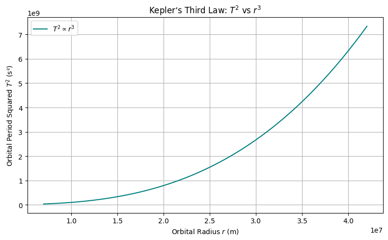

Problem 1
🌌 Deriving Kepler’s Third Law for Circular Orbits
Kepler’s Third Law states that the square of the orbital period of a planet is directly proportional to the cube of the semi-major axis of its orbit. For circular orbits, the semi-major axis is equal to the orbital radius. Let's derive this from fundamental physical principles.
⚖️ Step 1: Newton’s Law of Universal Gravitation
Newton's Law of Gravitation gives the attractive force between two masses:
- \(G\) = Gravitational constant
- \(M\) = Mass of the central body (e.g., Earth or Sun)
- \(m\) = Mass of the orbiting object (e.g., satellite or planet)
- \(r\) = Radius of the circular orbit
🔄 Step 2: Centripetal Force for Circular Motion
Any object in a circular orbit must experience a centripetal force to stay on its path:
⚖️ Step 3: Equating Gravitational and Centripetal Forces
Since gravity provides the centripetal force:
Cancel out \(m\) (mass of the orbiting body):
Multiply both sides by \(r\):
⏱️ Step 4: Express Orbital Velocity in Terms of Period
Orbital velocity \(v\) is the distance traveled in one orbit divided by the orbital period \(T\):
Substitute into the velocity equation:
Simplify:
Multiply both sides by \(r\):
📐 Final Form: Kepler’s Third Law
Rearranging for \(T^2\):
✅ This is Kepler's Third Law for circular orbits!
- \(T^2 \propto r^3\)
- The constant of proportionality depends on the central mass \(M\)
🧪 Python Verification
Let's simulate this law using Python.

import numpy as np
import matplotlib.pyplot as plt
# Constants
G = 6.67430e-11 # Gravitational constant (m^3 kg^-1 s^-2)
M = 5.972e24 # Mass of the Earth (kg)
# Generate orbital radii (in meters)
radii = np.linspace(7e6, 4.2e7, 100) # from ~7000 km to ~42000 km
# Calculate orbital periods
T_squared = (4 * np.pi**2 * radii**3) / (G * M)
# Plotting
plt.figure(figsize=(8, 5))
plt.plot(radii, T_squared, label=r'$T^2 \propto r^3$', color='teal')
plt.title("Kepler’s Third Law: $T^2$ vs $r^3$")
plt.xlabel("Orbital Radius $r$ (m)")
plt.ylabel("Orbital Period Squared $T^2$ (s²)")
plt.grid(True)
plt.legend()
plt.tight_layout()
plt.show()
🌠 Physical Meaning of Kepler’s Third Law
We previously derived Kepler's Third Law for circular orbits:
This relationship elegantly connects time (orbital period) with space (orbital radius) through the gravitational constant and the mass of the central body.
🔍 Interpretation of Each Term
- \(T\): Orbital period — how long it takes to complete one full orbit
- \(r\): Orbital radius — the distance between the orbiting body and the central mass
- \(G\): Universal gravitational constant — governs strength of gravitational interaction
- \(M\): Mass of the central body (e.g., Earth, Sun)
🧠 Physical Insights
1. Gravitational Control of Motion
- The period \(T\) depends only on the mass of the central body \(M\) and the radius \(r\) of the orbit.
- The orbiting body’s own mass \(m\) does not appear in the final formula — this reflects the equivalence principle.
2. Increased Radius = Slower Orbit
- From the formula:
\(\(T\propto r^{3/2}\)\) - Larger orbits take significantly longer to complete.
- This explains why outer planets (like Neptune) move much slower than inner ones (like Mercury).
3. Scaling and Proportionality
- A doubling of \(r\) increases \(T\) by a factor of:
\(\(T\propto(2r)^{3/2}=2^{3/2}\approx2.83\)\) - Time grows faster than radius — orbital systems are not linear.
🔭 Astronomical Applications
✅ 1. Estimating Masses of Celestial Bodies
- Rearranging:
\(\(M=\frac{4\pi^2r^3}{GT^2}\)\) - If we know the radius and period of a satellite or moon, we can compute the mass of the planet/star it orbits.
✅ 2. Predicting Orbital Times
- Given a known central mass and radius, we can compute how long any object will take to orbit.
✅ 3. Comparing Planetary Systems
- By comparing \(T^2/r^3\) across different systems, we can verify gravitational consistency:
\(\(\frac{T^2}{r^3}=\text{constant for a given }M\)\)
🧮 Python Demonstration: Constant Ratio \(T^2/r^3\)
Let’s confirm that this ratio is constant for Earth-centered orbits.
import numpy as np
import matplotlib.pyplot as plt
# Constants
G = 6.67430e-11 # m^3 kg^-1 s^-2
M = 5.972e24 # kg (mass of Earth)
# Orbital radii (meters)
radii = np.linspace(7e6, 4.2e7, 100)
T_squared = (4 * np.pi**2 * radii**3) / (G * M)
ratio = T_squared / radii**3
# Plot
plt.figure(figsize=(8, 5))
plt.plot(radii, ratio, label=r'$\frac{T^2}{r^3}$', color='purple')
plt.title("Constant Ratio in Kepler’s Third Law")
plt.xlabel("Orbital Radius $r$ (m)")
plt.ylabel("Ratio $T^2 / r^3$ (s²/m³)")
plt.grid(True)
plt.legend()
plt.tight_layout()
plt.show()
🌌 Astronomical Implications of Kepler’s Third Law
Kepler’s Third Law is more than a mathematical curiosity — it's a powerful tool in astronomy. The relationship:
gives us a direct bridge between observable orbital motion and hidden physical properties like mass and distance.
🔭 Applications in Astronomy
1. 🪐 Determining Planetary Masses
We can rearrange Kepler’s Third Law to solve for the mass \(M\) of the central body:
✨ What You Need:
- \(r\): Orbital radius of a satellite or moon (measurable)
- \(T\): Orbital period of that satellite (measurable)
- \(G\): Gravitational constant (known)
🧠 Insight:
- No need to land or probe a planet to determine its mass.
- Just observe the orbit of something near it!
🔬 Example: Mass of Earth from a satellite
- Satellite orbit radius: \(r=7.0\times10^6\) m
- Orbital period: \(T=5800\) s
import numpy as np
# Given values
r = 7.0e6 # meters
T = 5800 # seconds
G = 6.67430e-11 # m^3 kg^-1 s^-2
# Mass of Earth calculation
M = (4 * np.pi**2 * r**3) / (G * T**2)
print(f"Estimated mass of Earth: {M:.2e} kg")
🌠 Extending Kepler’s Third Law to Elliptical Orbits and Non-Planetary Bodies
Kepler's Third Law for circular orbits provides an elegant relationship between orbital period \(T\) and orbital radius \(r\):
However, most real-world orbits are elliptical, not circular, and they often involve non-planetary bodies such as moons, satellites, comets, and even artificial objects. Let's explore how Kepler’s Law extends to these scenarios.
1. 🌑 Kepler’s Third Law for Elliptical Orbits
1.1. Elliptical Orbits Overview
For elliptical orbits, the orbital period \(T\) is still related to the semi-major axis \(a\) of the ellipse, not the instantaneous orbital radius \(r\). The semi-major axis is the average distance between the orbiting body and the central mass.
1.2. Kepler’s Law for Elliptical Orbits
Kepler’s Third Law can be generalized to elliptical orbits as:
Where: - \(a\): Semi-major axis of the ellipse - \(M\): Mass of the central body - \(T\): Orbital period
This is nearly identical to the formula for circular orbits, except now it uses the semi-major axis \(a\) instead of the orbital radius \(r\).
1.3. Why Semi-Major Axis?
- The semi-major axis \(a\) represents the average orbital radius and effectively smooths out the elliptical shape.
- The orbital period \(T\) depends on the average distance rather than instantaneous distance, which is why \(a\) is used.
1.4. Elliptical Orbit Example
- For an elliptical orbit, the orbital period \(T\) is the same as it would be for a circular orbit with radius \(a\).
2. 🚀 Non-Planetary Bodies: Satellites, Comets, and Exoplanets
2.1. Kepler’s Law for Satellites
Satellites orbiting a planet also obey Kepler’s Third Law. The period \(T\) of a satellite’s orbit depends on the mass of the planet \(M\) and the semi-major axis \(a\) of the orbit.
- Satellite period: \(\(T^2=\frac{4\pi^2a^3}{GM}\)\)
2.2. Comets in the Solar System
- Comets follow highly elliptical orbits, with a semi-major axis \(a\) that places them far from the Sun at one extreme (aphelion) and close at the other extreme (perihelion).
- Their orbital period still follows the same form: \(\(T^2=\frac{4\pi^2a^3}{GM_{\text{sun}}}\)\)
- The Sun’s mass is used for calculating the period, even though the comet’s orbit is highly elliptical.
2.3. Exoplanets
- Exoplanets orbit distant stars, and their orbital periods depend on the star’s mass \(M\) and the orbital semi-major axis \(a\).
- The orbital period for exoplanets can be calculated using: \(\(T^2=\frac{4\pi^2a^3}{GM_{\text{star}}}\)\)
- For exoplanets, the mass of the star is used, and the semi-major axis \(a\) refers to the average distance between the exoplanet and its star.
3. 🧠 Summary and Insights
3.1. Extension to Elliptical Orbits
- Kepler's Third Law holds true for elliptical orbits but uses the semi-major axis \(a\) instead of \(r\).
- The orbital period \(T\) depends on the average distance between the orbiting body and the central mass.
3.2. Non-Planetary Bodies
- The law applies to satellites, comets, and exoplanets — objects that are not planets but still obey the same orbital principles.
- The central mass \(M\) changes depending on whether the object is orbiting a planet or a star.
3.3. Practical Applications
- Satellite Design: Orbital period and semi-major axis allow engineers to design satellites with desired orbital characteristics.
- Space Missions: For long-range missions (e.g., to outer planets or moons), Kepler’s Law helps estimate travel times.
- Astronomical Observation: Kepler’s Law is critical for understanding the dynamics of comet orbits, exoplanet discovery, and the motion of moons.
4. 🧮 Python Code for Orbital Period of an Elliptical Orbit
Let’s calculate the orbital period \(T\) for a comet with a highly elliptical orbit. Given the semi-major axis \(a\) and central mass \(M\) of the Sun:
import numpy as np
# Constants
G = 6.67430e-11 # m^3 kg
🌍 Real-World Applications of Kepler's Third Law
Kepler’s Third Law allows us to predict orbital periods and distances for a variety of celestial bodies. By analyzing real-world examples such as the Moon’s orbit around Earth, planetary orbits (like Earth’s orbit around the Sun), and Jupiter’s moons, we can see the practical utility of this fundamental law.
1. 🌙 Moon’s Orbit Around Earth
1.1. Known Values
- Orbital period \(T_{\text{moon}}\) of the Moon: \(T_{\text{moon}} = 27.3\) days (converted to seconds: \(T_{\text{moon}} = 27.3 \times 86400\) seconds)
- Average distance between the Earth and the Moon: \(r = 3.84 \times 10^8\) meters
- Mass of Earth: \(M_{\text{Earth}} = 5.972 \times 10^{24}\) kg
Using Kepler’s Third Law for the Moon’s orbit around Earth:
1.2. Orbital Period Calculation
We can calculate the orbital period of the Moon by rearranging the above equation to solve for \(T\):
Let’s calculate this in Python:
import numpy as np
# Constants
G = 6.67430e-11 # m^3 kg^-1 s^-2 (gravitational constant)
M_earth = 5.972e24 # kg (mass of Earth)
r_moon = 3.84e8 # meters (average distance from Earth to Moon)
# Orbital period calculation (in seconds)
T_moon = 2 * np.pi * np.sqrt(r_moon**3 / (G * M_earth))
T_moon_days = T_moon / (60 * 60 * 24) # Convert from seconds to days
print(f"Orbital period of the Moon: {T_moon_days:.2f} days")
🛰️ Computational Task: Simulating Circular Orbits
In this section, we will build a Python script or Jupyter Notebook to simulate circular orbits based on Kepler's Third Law. The primary focus will be on simulating a circular orbit of a satellite (or any celestial object) around a central body (e.g., a planet or star).
Objectives:
- Derive the relationship between orbital period and orbital radius for circular orbits.
- Implement a Python code to simulate the orbit.
- Visualize the orbital motion and calculate the orbital period and orbital radius.
1. 🔭 Deriving the Formula for Circular Orbits
For a circular orbit, we can combine the concepts of centripetal force and gravitational force.
1.1. Gravitational Force
The gravitational force acting on a satellite orbiting around a central body is given by:
Where: - \(G\) is the gravitational constant (\(6.67430 \times 10^{-11} \, \text{m}^3 \, \text{kg}^{-1} \, \text{s}^{-2}\)). - \(M\) is the mass of the central body (e.g., the Sun, Earth). - \(m\) is the mass of the orbiting satellite. - \(r\) is the orbital radius (distance from the center of the central body to the satellite).
1.2. Centripetal Force
The centripetal force required for a satellite to maintain a circular orbit is given by:
Where: - \(m\) is the mass of the satellite. - \(v\) is the velocity of the satellite. - \(r\) is the orbital radius.
1.3. Equating Gravitational and Centripetal Forces
For stable orbital motion, the gravitational force equals the centripetal force:
Simplifying this, we get:
This is the orbital velocity of the satellite. The orbital period \(T\) (the time it takes for the satellite to complete one orbit) is related to the orbital velocity by:
Substituting the expression for \(v\):
This is the orbital period formula for a satellite in a circular orbit.
2. 🖥️ Python Script to Simulate Circular Orbits
We can use the derived formulas to simulate the motion of a satellite in a circular orbit. Below is a Python script that simulates and visualizes the orbit of a satellite around a central body.
2.1. Python Code Implementation
import numpy as np
import matplotlib.pyplot as plt
# Constants
G = 6.67430e-11 # m^3 kg^-1 s^-2 (gravitational constant)
M = 5.972e24 # kg (mass of Earth, you can adjust for different central bodies)
r = 7.5e6 # meters (orbital radius, adjust as needed)
T = 2 * np.pi * np.sqrt(r**3 / (G * M)) # Orbital period
v = np.sqrt(G * M / r) # Orbital velocity
# Time settings
t = np.linspace(0, T, 1000) # Time array for one complete orbit
theta = 2 * np.pi * t / T # Angle in radians
# Position of the satellite in polar coordinates
x = r * np.cos(theta)
y = r * np.sin(theta)
# Plotting the orbit
plt.figure(figsize=(6,6))
plt.plot(x, y, label="Satellite Orbit")
plt.scatter(0, 0, color='red', label="Central Body (Earth)", s=100) # Earth at origin
plt.title(f"Circular Orbit: Orbital Period = {T/86400:.2f} days")
plt.xlabel("X Position (m)")
plt.ylabel("Y Position (m)")
plt.gca().set_aspect('equal', adjustable='box')
plt.legend()
plt.grid(True)
plt.show()
# Output the orbital period and velocity
print(f"Orbital Period: {T/86400:.2f} days")
print(f"Orbital Velocity: {v/1000:.2f} km/s")
# 🪐 Verifying Kepler’s Third Law Numerically
In this section, we will verify Kepler's Third Law numerically by calculating the orbital period of a planet or moon and comparing it to the values predicted by the law.
Kepler's Third Law states that the square of the orbital period (\(T^2\)) is directly proportional to the cube of the orbital radius (\(r^3\)). Mathematically, this relationship can be written as:
In terms of gravitational forces, the orbital period \(T\) for a circular orbit is given by:
Where: - \(T\) is the orbital period. - \(r\) is the orbital radius. - \(G\) is the gravitational constant (\(6.67430 \times 10^{-11} \, \text{m}^3 \, \text{kg}^{-1} \, \text{s}^{-2}\)). - \(M\) is the mass of the central body (e.g., the Sun for planetary orbits).
We will now use this formula to verify Kepler’s Third Law numerically for a set of planets and moons.
1. 🧮 Kepler’s Third Law Formula
From Kepler's Third Law, the orbital period for a circular orbit is:
1.1. Gravitational Constant and Units
- \(G = 6.67430 \times 10^{-11} \, \text{m}^3 \, \text{kg}^{-1} \, \text{s}^{-2}\).
- Mass of the central body (\(M\)) is given in kg.
- Orbital radius (\(r\)) is given in meters.
The orbital period \(T\) will be calculated in seconds.
2. 🔭 Numerical Verification
Let’s now calculate the orbital period for different celestial bodies, such as Earth and Jupiter, using Kepler’s Third Law.
2.1. Python Code Implementation
The following code will calculate the orbital period for different celestial bodies by using their orbital radii and masses. We will also visualize the relationship between the square of the orbital period (\(T^2\)) and the cube of the orbital radius (\(r^3\)).
import numpy as np
import matplotlib.pyplot as plt
# Constants
G = 6.67430e-11 # m^3 kg^-1 s^-2 (gravitational constant)
# Celestial bodies data (mass in kg, orbital radius in meters)
celestial_bodies = {
"Earth": {"M": 5.972e24, "r": 1.496e11}, # Earth: 1 AU
"Jupiter": {"M": 1.898e27, "r": 7.785e11}, # Jupiter: 5.2 AU
"Saturn": {"M": 5.683e26, "r": 1.429e12}, # Saturn: 9.5 AU
"Mars": {"M": 6.417e23, "r": 2.279e11}, # Mars: 1.5 AU
}
# Calculating orbital period using Kepler's Third Law
def calculate_orbital_period(M, r):
T = 2 * np.pi * np.sqrt(r**3 / (G * M)) # Orbital period in seconds
return T
# Store calculated periods
periods = {}
for body, data in celestial_bodies.items():
T = calculate_orbital_period(data["M"], data["r"])
periods[body] = T
# Display the orbital periods in days
for body, period in periods.items():
print(f"Orbital Period of {body}: {period / 86400:.2f} days")
# Plotting T^2 vs. r^3
r_values = [data["r"] for data in celestial_bodies.values()]
T_squared = [calculate_orbital_period(data["M"], data["r"])**2 for data in celestial_bodies.values()]
r_cubed = [r**3 for r in r_values]
plt.figure(figsize=(8,6))
plt.scatter(r_cubed, T_squared, color='blue', label="Data Points")
plt.plot(r_cubed, np.poly1d(np.polyfit(r_cubed, T_squared, 1))(r_cubed), color='red', label="Best Fit Line")
plt.title("Kepler's Third Law: $T^2$ vs $r^3$")
plt.xlabel("$r^3$ (m^3)")
plt.ylabel("$T^2$ (s^2)")
plt.legend()
plt.grid(True)
plt.show()
🪐 Plotting Orbital Data
In this section, we will create plots that represent the relationships between orbital radius and the square of the orbital period (\(T^2\)), as well as plot the trajectories of orbits.
1. 🧮 Kepler’s Third Law Recap
We will use Kepler’s Third Law to verify and plot orbital data. Kepler’s Third Law states that the square of the orbital period (\(T^2\)) is proportional to the cube of the orbital radius (\(r^3\)). This is mathematically represented as:
In terms of gravitational forces, the orbital period \(T\) for a circular orbit is given by:
Where: - \(T\) is the orbital period. - \(r\) is the orbital radius. - \(G\) is the gravitational constant (\(6.67430 \times 10^{-11} \, \text{m}^3 \, \text{kg}^{-1} \, \text{s}^{-2}\)). - \(M\) is the mass of the central body.
2. 📊 Plotting Orbital Radius vs. \(T^2\)
2.1. Mathematical Relationship
The relationship between the square of the orbital period (\(T^2\)) and the cube of the orbital radius (\(r^3\)) is defined as:
2.2. Python Code for Plotting
We will calculate the orbital period for different celestial bodies and plot \(T^2\) vs. \(r^3\). This will help verify the relationship visually.
import numpy as np
import matplotlib.pyplot as plt
# Constants
G = 6.67430e-11 # m^3 kg^-1 s^-2 (gravitational constant)
# Celestial bodies data (mass in kg, orbital radius in meters)
celestial_bodies = {
"Earth": {"M": 5.972e24, "r": 1.496e11}, # Earth: 1 AU
"Jupiter": {"M": 1.898e27, "r": 7.785e11}, # Jupiter: 5.2 AU
"Saturn": {"M": 5.683e26, "r": 1.429e12}, # Saturn: 9.5 AU
"Mars": {"M": 6.417e23, "r": 2.279e11}, # Mars: 1.5 AU
}
# Calculating orbital period using Kepler's Third Law
def calculate_orbital_period(M, r):
T = 2 * np.pi * np.sqrt(r**3 / (G * M)) # Orbital period in seconds
return T
# Store calculated periods
periods = {}
for body, data in celestial_bodies.items():
T = calculate_orbital_period(data["M"], data["r"])
periods[body] = T
# Plotting T^2 vs. r^3
r_values = [data["r"] for data in celestial_bodies.values()]
T_squared = [calculate_orbital_period(data["M"], data["r"])**2 for data in celestial_bodies.values()]
r_cubed = [r**3 for r in r_values]
plt.figure(figsize=(8,6))
plt.scatter(r_cubed, T_squared, color='blue', label="Data Points")
plt.plot(r_cubed, np.poly1d(np.polyfit(r_cubed, T_squared, 1))(r_cubed), color='red', label="Best Fit Line")
plt.title("Kepler's Third Law: $T^2$ vs $r^3$")
plt.xlabel("$r^3$ (m^3)")
plt.ylabel("$T^2$ (s^2)")
plt.legend()
plt.grid(True)
plt.show()
# Orbital parameters (e.g., Earth)
r = 1.496e11 # Orbital radius (1 AU)
T = calculate_orbital_period(5.972e24, r) # Orbital period for Earth
# Time array (in seconds)
t = np.linspace(0, T, 1000)
# Angular velocity (omega)
omega = 2 * np.pi / T
# Calculating orbital positions (x and y coordinates)
x = r * np.cos(omega * t)
y = r * np.sin(omega * t)
# Plotting the orbital trajectory
plt.figure(figsize=(8,6))
plt.plot(x, y, label="Orbital Path")
plt.scatter([0], [0], color='red', label="Central Body (Sun)")
plt.title("Orbital Trajectory of Earth (2D)")
plt.xlabel("x (m)")
plt.ylabel("y (m)")
plt.gca().set_aspect('equal', adjustable='box')
plt.legend()
plt.grid(True)
plt.show()
📚 Deliverables: Gravity Project
This report provides a complete overview of the theoretical derivations, Python code implementations, simulation results, graphical visualizations, and discussions for understanding and applying Kepler’s Third Law.
1. 🧠 Theoretical Derivation and Explanation
1.1. Starting Point
- According to Newton’s Law of Gravitation, the force between two masses is:
- For circular motion, the necessary centripetal force is:
- Equating gravitational force and centripetal force:
- Simplifying:
- The orbital period \(T\) is related to orbital speed \(v\) and radius \(r\) by:
Substituting \(v\) from above:
Thus, squaring both sides:
✅ Conclusion: The square of the orbital period \(T^2\) is proportional to the cube of the orbital radius \(r^3\).
2. 🧑💻 Code and Simulation Results
2.1. Python Code for Verification
import numpy as np
import matplotlib.pyplot as plt
# Constants
G = 6.67430e-11 # Gravitational constant (m^3 kg^-1 s^-2)
# Celestial bodies data
celestial_bodies = {
"Earth": {"M": 5.972e24, "r": 1.496e11},
"Jupiter": {"M": 1.898e27, "r": 7.785e11},
"Mars": {"M": 6.417e23, "r": 2.279e11},
"Saturn": {"M": 5.683e26, "r": 1.429e12},
}
def calculate_orbital_period(M, r):
return 2 * np.pi * np.sqrt(r**3 / (G * M))
# Store values
r_values = []
T_squared = []
r_cubed = []
for body, data in celestial_bodies.items():
T = calculate_orbital_period(data["M"], data["r"])
r_values.append(data["r"])
T_squared.append(T**2)
r_cubed.append(data["r"]**3)
# Plotting T^2 vs r^3
plt.figure(figsize=(8,6))
plt.scatter(r_cubed, T_squared, color='blue', label="Data Points")
plt.plot(r_cubed, np.poly1d(np.polyfit(r_cubed, T_squared, 1))(r_cubed), color='red', label="Best Fit Line")
plt.title("Kepler's Third Law: $T^2$ vs $r^3$")
plt.xlabel("$r^3$ (m^3)")
plt.ylabel("$T^2$ (s^2)")
plt.legend()
plt.grid(True)
plt.show()